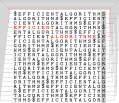

COMP 526 – Efficient Algorithms (Fall 2022)
This is an archived version of this module from Fall 2022.
Click here for the current iteration.

Efficient Algorithms (COMP 526) is a first-semester masters module on efficient algorithms and data structures. It covers a few fundamental results in algorithms and data structures plus more advanced topics, with an emphasis on methods that are useful in applications.
Quick links
Slido ⋅ Live ⋅ Canvas ⋅ Campuswire ⋅ Units
Teaching Evaluation
Below are the results of the University’s end-of-module survey.
Lectures
There will be synchronous interactive lectures, starting in the week of Sept 26. Live participation is expected; recordings will be available.
Our regular lecture slots are
- Monday 14:00 – 15:00 in ELEC 202
- Wednesday 11:00 – 13:00 in Eng. Walter LT
If you are registered for the module, they will appear on your timetable.
(Trouble finding rooms? Check out this list.)
Units
The module will consist of the following units:
- Unit 0 – Administrativa & Proof Techniques
- Unit 1 – Machines & Models
- Unit 2 – Fundamental Data Structures ⋅ (extra material)
- Unit 3 – Efficient Sorting
- Unit 4 – String Matching
- Unit 5 – Parallel Algorithms
- Unit 6 – Text indexing
- Unit 7 – Compression
- Unit 8 – Error-Correcting Codes
- CA1: Programming Puzzle 1
- CA2: Programming Puzzle 2
Tutorials
There will be small-group tutorials, run by Ben Smith.
You are assigned to one of the groups by the timetabling team; check your personal timetable.
| Tutorial | Date | Content | Worksheet |
|---|---|---|---|
| 1 | Oct 06/07 | Unit 0 | tutorial-01.pdf |
| 2 | Oct 13/14 | Units 0 & 1 | tutorial-02.pdf |
| 3 | Oct 20/21 | Units 2 & 3 | tutorial-03.pdf |
| 4 | Oct 27/28 | Unit 3 | tutorial-04.pdf |
| 5 | Nov 03/04 | Unit 4 | tutorial-05.pdf |
| 6 | Nov 10/11 | Unit 5 & 6 | tutorial-06.pdf |
| 7 | Nov 24/25 | Unit 6 | tutorial-07.pdf |
| 8 | Dec 01/02 | Unit 7 | tutorial-08.pdf |
| 9 | Dec 08/09 | Units 7 & 8 | tutorial-09.pdf |
| 10 | Dec 15/16 | exam problems | tutorial-10.pdf |
Online Tools
We will use the following tools and services in this module.
Campuswire
Campuswire is the main online communication channel. Use it as a question & answer forum, for (social or topical) discussions. (See features of the platform for Q&A and chat).
Canvas
We will use the university’s official learning management system Canvas for quizzes (class tests and online exams) and assessments. You are automatically enrolled for COMP526 on Canvas when you are registerd for the module.
Slido
During the live lectures, I will use Slido to for interactive parts.
Exam & Assessment
The final grade for the module is the weighted average of
- the final exam (60%) and
- several continuous assessments:
- programming puzzle 1 (10%),
- programming puzzle 2 (10%),
- several “class tests” on Canvas (15% in total), and
- bonus marks for good participation (5%).
More detail will be provided in class (see Unit 0).
Further reading
There are many good algorithms textbooks, but no single definitive one that covers all topics of this module (in the way I want them presented!). Indeed, I have been cherrypicking the – in my opinion – most suitable descriptions from a variety of sources; check the individual units for details.
Our library’s reading list for the module can help you access the resouces.